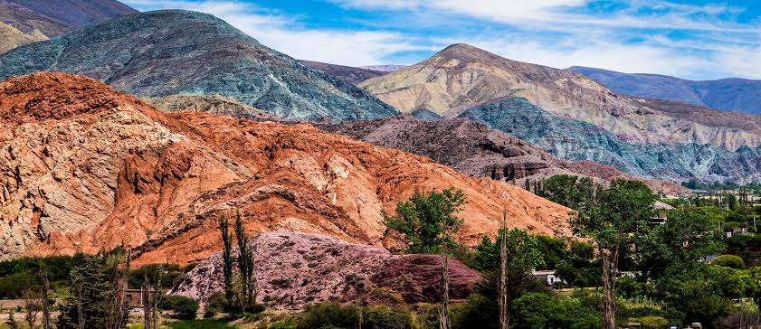
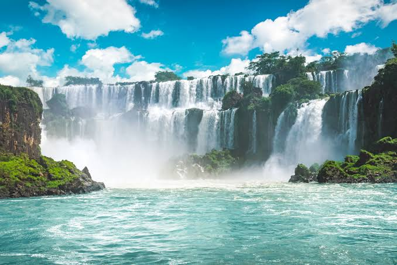
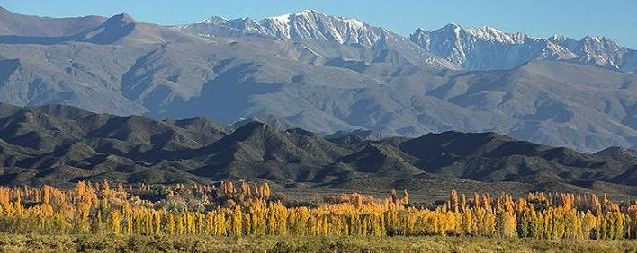
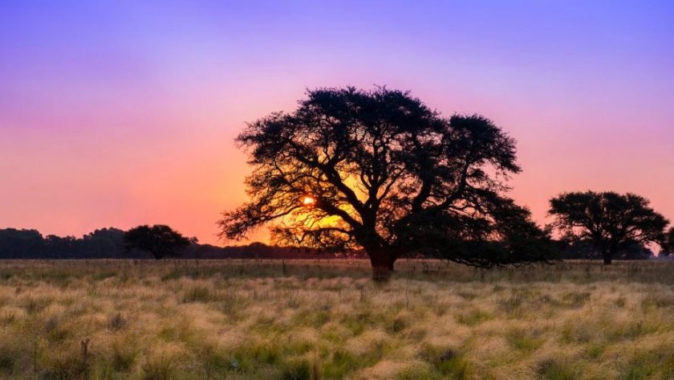
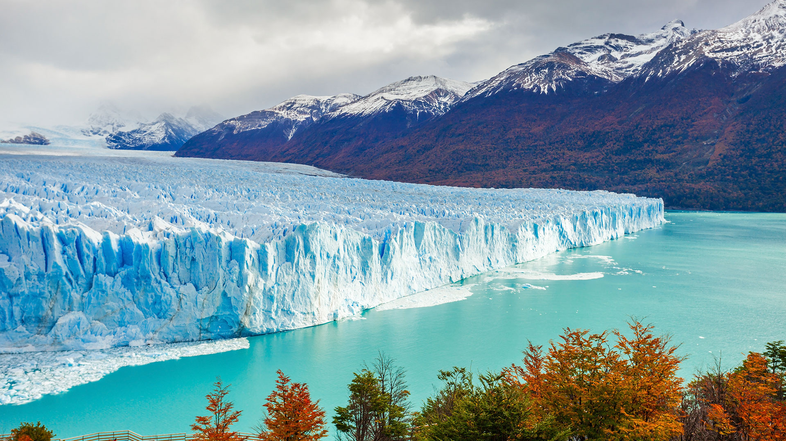

Regiones
Seis formas distintas de conocer Argentina.

Norte (NOA)
Cerros de colores, pueblos andinos y bodegas de altura. Una región para conocer la cultura y los paisajes más antiguos del país.
- Cerro de los Siete Colores (Jujuy)
- Cafayate (Salta)

Litoral (NEA)
Grandes ríos, selva subtropical y humedales desbordantes de fauna. Una región verde ideal para el ecoturismo, los safaris fotográficos y el descanso termal.
- Cataratas del Iguazú (Misiones)
- Esteros del Iberá (Corrientes)

Cuyo
La imponente Cordillera de los Andes, valles áridos y oasis vitivinícolas. Una región que combina el turismo aventura con bodegas de clase mundial y paisajes lunares.
- Parque Provincial Aconcagua (Mendoza)
- Valle de la Luna (San Juan)

Región Pampeana
Sierras místicas, ríos cristalinos y una vibrante vida cultural y teatral. Una región en el corazón del país perfecta para el entretenimiento, la historia y las escapadas familiares.
- Villa Carlos Paz (Córdoba)
- Monumento a la Bandera en Rosario (Santa Fe)
Centro
La inmensidad de la llanura, extensas playas atlánticas y el pulso de la gran ciudad. Una región que fusiona la cultura gaucha, museos urbanos, tango y la principal costa balnearia.
- Mar del Plata (Buenos Aires)
- CABA (Ciudad Autónoma de Buenos Aires)

Patagonia
Lagos espejados, bosques milenarios, glaciares imponentes y fauna marina. Una región de paisajes colosales y leyendas que se extienden hasta los confines australes del planeta.
- San Carlos de Bariloche (Río Negro)
- Glaciar Perito Moreno (Santa Cruz)